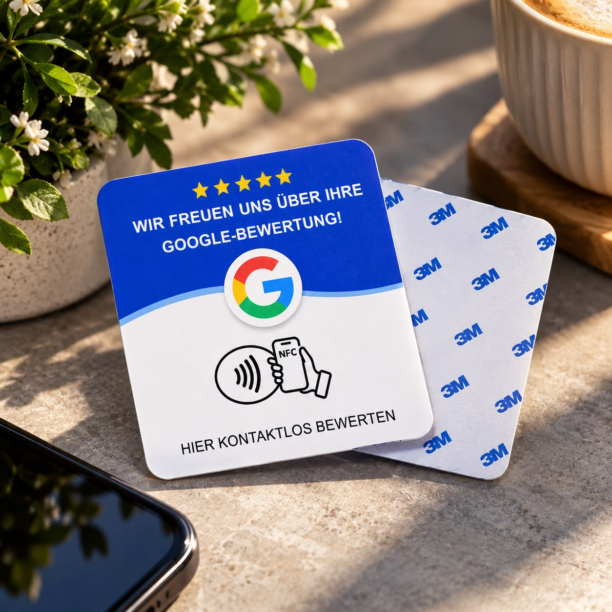
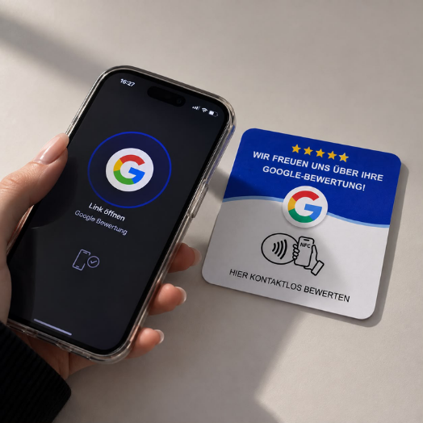

1
Karte halten
Das Smartphone kurz an das TapKärtchen führen. NFC erkennt die Karte von selbst.
NFC Kärtchen
Ein TapKärtchen ist eine kleine NFC-Karte. Kundinnen und Kunden halten ihr Smartphone kurz daran — und gelangen direkt zur Google-Bewertungsseite. Ohne Suche, ohne Umwege.

Warum Bewertungen
Positive Rückmeldungen machen Orte greifbar: ein Café, ein Salon, ein kleines Geschäft. Viele Gäste würden gerne etwas hinterlassen — wenn der Weg nicht so lang wäre. Genau dort setzt das TapKärtchen an.
So funktioniert es
Nichts einrichten auf dem Smartphone. Einfach halten — und fertig.
Das Smartphone kurz an das TapKärtchen führen. NFC erkennt die Karte von selbst.
Es erscheint direkt die hinterlegte Google-Bewertungsseite des Ortes.
Wer möchte, schreibt ein paar Worte. Wer nicht möchte, legt das Telefon einfach wieder weg.

Im Alltag
Auf der Theke, am Tisch, neben der Kasse. Das TapKärtchen ist kein Plakat. Es ist ein stiller Hinweis: Wenn du etwas sagen möchtest, ist der Weg kurz.
Für wen
Besonders stimmig, wo Begegnungen klein und persönlich sind.